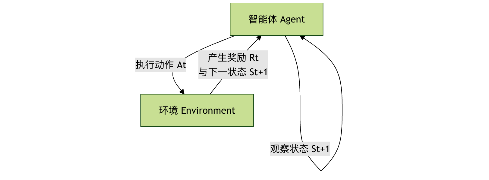

深層強化学習
深層強化学習は、人工知能分野においてエキサイティングな学際領域です。これを2つの部分に分解して理解することができます：
強化学習は核となる考え方であり、人間や動物が「試行錯誤」を通して学習するプロセスを模倣しています。子犬に新しい指示を教える場面を想像してみてください。正しくできたらおやつを与えて報酬とし、間違えたら報酬は与えず、場合によっては軽い罰を与えるかもしれません。何度も試行するうちに、子犬は特定の状況で報酬を得るために正しい行動を取ることを学習します。強化学習におけるエージェント（Agent）はこの子犬のような存在で、環境（Environment）と相互作用し、得られた報酬（Reward）に基づいて自身の行動方策（Policy）を調整します。
深層学習は強力なツールです。強化学習が直面する環境が非常に複雑な場合（例えば、テレビゲームの画面やロボットのセンサーデータなど）、従来の数学的手法では、そこから意思決定に役立つ特徴を直接抽出することが困難です。深層学習、特に深層ニューラルネットワークは、このような高次元で複雑な生データ（画像や音声など）を処理するのが得意で、データの階層的な特徴表現を自動的に学習できます。
したがって、深層強化学習 = 強化学習の意思決定フレームワーク + 深層学習の知覚・表現能力。これにより、エージェントは複雑な生の入力（ピクセルなど）から直接、長期的な目標を達成するための最適な行動を学習できるようになります。

核心理念と基本フレームワーク
深層強化学習を理解するには、まずその基本フレームワークにおけるいくつかの主要な役割と、それらの関係を把握する必要があります。
強化学習の基本要素
エージェント (Agent)
- 役割：学習者であり意思決定者。
- 責務：環境の状態を観察し、学習した方策に基づいて行動を選択・実行し、環境からフィードバック（新しい状態と報酬）を受け取ります。
環境 (Environment)
- 役割：エージェントが相互作用するすべての外部のもの。
- 責務：エージェントの行動を受け取り、自身の状態を更新し、対応する報酬を与えます。
状態 (State, s)
- 定義：ある時点における環境の具体的な状況の記述。深層強化学習では、状態は通常高次元であり、例えばゲームの1フレームの画像などです。
行動 (Action, a)
- 定義：エージェントが与えられた状態で行える選択肢。例えば、ゲームでは「上へ」「左へ」「発射」などがあります。
報酬 (Reward, r)
- 定義：環境がエージェントの行動に対して与える即時のフィードバック信号であり、スカラー値です。報酬はエージェントの学習における「羅針盤」であり、その目標は長期的な累積報酬を最大化することです。
方策 (Policy, π)
- 定義：エージェントの行動規範であり、状態から行動への写像関数です。どの状態でどのような行動を取るべきかをエージェントに示します。方策は決定的（
a = π(s)）、確率的（a ~ π(a|s)）。
- 定義：エージェントの行動規範であり、状態から行動への写像関数です。どの状態でどのような行動を取るべきかをエージェントに示します。方策は決定的（
価値関数 (Value Function)
- 定義：状態または状態・行動ペアの良し悪しを評価するために使われます。現在の状態（または現在の行動を実行した後）から始めて、将来得られる期待累積報酬。
- 状態価値関数 V(s)：状態
sにおいて、現在の方策に従って得られる期待リターンです。 - 行動価値関数 Q(s, a)：状態
sにおいて行動aを実行し、その後現在の方策に従って得られる期待リターンです。
相互作用の流れ
エージェントと環境の相互作用は継続的な循環プロセスであり、次のフローチャートで明確に示せます：

この循環が繰り返され、エージェントは大量の相互作用データ（s, a, r, s'）を収集し、これらのデータを利用して自身の方策を改善します。
深層強化学習の主要アルゴリズム
深層強化学習のアルゴリズム群は主に2つの大きなカテゴリに分けられます：価値ベース (Value-Based) 和 方策ベース (Policy-Based)、および両方の利点を組み合わせたアクター・クリティック (Actor-Critic)手法です。
1. 価値ベースのDeep Qネットワーク
この種のアルゴリズムの核心は、最適な行動価値関数 Q(s, a)を学習することです。正確なQ関数を学習できれば、最適方策は単純です。各状態sにおいて、Q(s, a)を最大にする行動を選択します。a。
Deep Qネットワーク (DQN)は画期的な研究です。複雑なQ関数を深層ニューラルネットワークで近似します。
DQNの主要な技術的革新：
- 経験再生 (Experience Replay)：エージェントは相互作用の経験
(s, a, r, s')をメモリバッファに保存します。トレーニング時には、バッファからランダムにバッチの経験を抽出して学習します。これによりデータ間の相関がなくなり、トレーニングがより安定して効率的になります。 - ターゲットネットワーク (Target Network)：構造は同じだがパラメータの更新が遅い「ターゲットネットワーク」を使用して学習目標（Qターゲット値）を計算し、もう1つの「オンラインネットワーク」で行動選択とリアルタイム更新を行います。これにより、トレーニング中に目標値が絶えず変化する問題が解決され、安定性が大幅に向上します。
簡略化したDQNのトレーニング手順：
- オンラインネットワークを初期化し
Q、ターゲットネットワークを初期化しますQ_target（パラメータは同じ）、経験再生バッファを空にします。 - エージェントは現在の状態
sに基づき、一定の確率でランダムに、またはQネットワークに従って行動を選択します。a。 - 行動を実行すると、環境が報酬
rと新しい状態s'を返し、経験(s, a, r, s')を再生バッファに保存します。 - 再生バッファからランダムにバッチの経験をサンプリングします。
- 各サンプルについて、目標Q値を計算します：
y = r + γ * max_a' Q_target(s', a')。ここでγは割引因子であり、即時報酬と将来報酬のバランスを取るために使われます。 - 以
(y - Q(s, a))^2を損失として、勾配降下法でオンラインネットワークQのパラメータを更新します。 - 一定のステップごとに、オンラインネットワークのパラメータをターゲットネットワークにコピーします。
- ステップ2〜7を繰り返します。
利点と限界：
- 利点：サンプル効率が比較的高く、トレーニングが比較的安定しています。
- 限界：連続的な行動空間を自然に扱うことが困難です（なぜなら
max_a Q(s,a)を計算する必要があるため）、また通常は決定的方策しか学習できません。
2. 方策ベースのポリシー勾配法
この種の手法は、方策π(a|s; θ)（例えばニューラルネットワークで表現）を直接パラメータ化し、方策パラメータθを最適化することで、期待リターンを直接最大化します。
核となる考え方：期待リターンJ(θ)の方策パラメータθに関する勾配（すなわちポリシー勾配）を計算し、勾配方向にパラメータを更新することで、方策をどんどん良くしていきます。
REINFORCEアルゴリズムは古典的なポリシー勾配アルゴリズムです。その更新式は次の通りです：θ ← θ + α * ∇_θ log π(a|s; θ) * G_tここでG_tは現在の時刻からエピソード終了までの累積報酬であり、αは学習率です。
利点と限界：
- 利点：確率的方策を直接学習でき、連続的な行動空間に自然に適用できます。
- 限界：エピソード全体に基づく更新のため分散が大きく、トレーニングが不安定になり、サンプル効率が低くなります。
3. アクター・クリティック法
アクター・クリティックフレームワークは、価値ベースと方策ベースの手法を巧みに組み合わせ、互いの長所を活かして短所を補います。
- アクター (Actor)：方策ネットワークであり、状態に基づいて行動を生成します。まるで俳優が評論家の指導の下で自分の「演技」（方策）を改善するかのようです。
- クリティック (Critic)：価値ネットワーク（通常はQネットワークまたはVネットワーク）であり、アクターがある状態で行った行動の価値を評価する。それはクリティックのように、アクターのパフォーマンスを採点する。
作業フロー：
- アクターは現在の状態に基づいて
s自身の戦略に従って、行動を選択して実行するa。 - 環境が報酬を返す
rと新しい状態s'。 - クリティックは
(s, a, r, s')TD誤差（Temporal-Difference Error、予測価値と実際の価値の差を測定する信号）を計算する。 - クリティックはこの誤差を使って自分の価値評価ネットワークを更新し、採点をより正確にする。
- アクターはクリティックが提供する「評点」（TD誤差やアドバンテージ関数など）を使って自分の方策ネットワークを更新し、高い評価を得られる行動を選びやすくする。
利点：Actor-Critic法は通常、純粋な方策勾配法（REINFORCEなど）よりも分散が小さく、より安定しており、また純粋な価値ベースの手法（DQNなど）よりも連続行動や確率的方策の扱いに優れている。A3C, A2C, PPO, SACなどは非常に成功したActor-Criticアルゴリズムである。
実践：DQNでCartPoleゲームをプレイする
古典的な制御問題を通してCartPole（倒立振子）でDQNを直感的に体験しよう。
環境設定
OpenAI Gymという強化学習ツールキットを使用する。
サンプル
# !pip install gym numpy torch
import gym
import numpy as np
import random
import torch
import torch.nn as nn
import torch.optim as optim
import collections
# 環境を作成
env = gym.make('CartPole-v1')
state_dim = env.observation_space.shape[0] # 状態次元：4（カート位置、速度、棒の角度、角速度）
action_dim = env.action_space.n # 行動次元：2（左、右）
print(f"状態空間の次元: {state_dim}, 行動空間のサイズ: {action_dim}")
Qネットワークの定義
これはシンプルな全結合ニューラルネットワークで、入力は状態、出力は各行動に対応するQ値である。
サンプル
def __init__(self, state_dim, action_dim):
super(DQN, self).__init__()
self.fc1 = nn.Linear(state_dim, 128) # 第1層の全結合層
self.fc2 = nn.Linear(128, 128) # 第2層の全結合層
self.fc3 = nn.Linear(128, action_dim) # 出力層、各行動に1つのQ値
def forward(self, x):
x = torch.relu(self.fc1(x)) # ReLU活性化関数を使用して非線形性を導入
x = torch.relu(self.fc2(x))
return self.fc3(x) # Q値を出力、活性化関数は通さない
経験再生バッファの定義
過去の経験を保存しサンプリングするために使用する。
サンプル
def __init__(self, capacity):
self.buffer = collections.deque(maxlen=capacity) # 両端キュー、古い経験を自動的に破棄
def add(self, state, action, reward, next_state, done):
self.buffer.append((state, action, reward, next_state, done))
def sample(self, batch_size):
transitions = random.sample(self.buffer, batch_size)
# データを列ごとにスタックしたテンソルに整え、ニューラルネットワークのバッチ処理を容易にする
state, action, reward, next_state, done = zip(*transitions)
return (np.array(state), action, reward, np.array(next_state), done)
def size(self):
return len(self.buffer)
DQNエージェントの定義
ネットワーク、経験リプレイ、トレーニングロジックを統合している。
サンプル
def __init__(self, state_dim, action_dim, lr=1e-3, gamma=0.98, epsilon=0.01,
target_update_freq=10, buffer_size=10000, batch_size=64):
self.action_dim = action_dim
self.q_net = DQN(state_dim, action_dim) # オンラインネットワーク
self.target_q_net = DQN(state_dim, action_dim) # ターゲットネットワーク
self.target_q_net.load_state_dict(self.q_net.state_dict()) # 初期パラメータは一致
self.optimizer = optim.Adam(self.q_net.parameters(), lr=lr) # オプティマイザ
self.gamma = gamma # 割引率
self.epsilon = epsilon # 探索率（最終）
self.target_update_freq = target_update_freq # ターゲットネットワークの更新頻度
self.batch_size = batch_size
self.buffer = ReplayBuffer(buffer_size)
self.count = 0 # 更新ステップ数を記録
def take_action(self, state, epsilon=None):
"""epsilon-greedy方策に従って行動を選択"""
if epsilon is None:
epsilon = self.epsilon
if np.random.random() < epsilon:
return np.random.randint(self.action_dim) # 探索：ランダムに選択
else:
state = torch.tensor(state, dtype=torch.float).unsqueeze(0) # バッチ次元を追加
with torch.no_grad():
q_values = self.q_net(state)
return q_values.argmax().item() # 利用：Q値が最大の行動を選択
def update(self):
"""経験リプレイバッファからサンプリングしてネットワークを更新"""
if self.buffer.size() < self.batch_size:
return
# 1. サンプリング
states, actions, rewards, next_states, dones = self.buffer.sample(self.batch_size)
# PyTorchテンソルに変換
states = torch.tensor(states, dtype=torch.float)
actions = torch.tensor(actions).unsqueeze(1) # 形状を[batch_size, 1]に変更し、gather操作を容易にする
rewards = torch.tensor(rewards, dtype=torch.float).unsqueeze(1)
next_states = torch.tensor(next_states, dtype=torch.float)
dones = torch.tensor(dones, dtype=torch.float).unsqueeze(1)
# 2. 現在のQ値を計算 (Q(s, a))
current_q_values = self.q_net(states).gather(1, actions) # 実行した行動aに対応するQ値のみを取り出す
# 3. ターゲットQ値を計算 (r + γ * max_a' Q_target(s', a'))
with torch.no_grad():
next_q_values = self.target_q_net(next_states).max(1)[0].unsqueeze(1) # 次の状態の最大Q値を取得
target_q_values = rewards + self.gamma * next_q_values * (1 - dones) # エピソードが終了した場合(done=1)、将来の報酬はない
# 4. 損失を計算（平均二乗誤差）
loss = nn.MSELoss()(current_q_values, target_q_values)
# 5. 勾配降下でオンラインネットワークを更新
self.optimizer.zero_grad()
loss.backward()
# オプション：勾配クリッピング、勾配爆発を防ぐ
# torch.nn.utils.clip_grad_norm_(self.q_net.parameters(), max_norm=10)
self.optimizer.step()
self.count += 1
# 6. 定期的にターゲットネットワークを更新
if self.count % self.target_update_freq == 0:
self.target_q_net.load_state_dict(self.q_net.state_dict())
トレーニングループ
サンプル
"""エージェントをトレーニング"""
return_list = [] # 各エピソードの総報酬を記録
epsilon = initial_epsilon
for i_episode in range(num_episodes):
state, _ = env.reset()
episode_return = 0
done = False
for step in range(max_steps):
# 1. 行動を選択して実行
action = agent.take_action(state, epsilon) # 減衰する探索率を使用
next_state, reward, done, truncated, _ = env.step(action)
# 2. 経験を保存
agent.buffer.add(state, action, reward, next_state, done)
state = next_state
episode_return += reward
# 3. ネットワークを更新
agent.update()
if done or truncated:
break
# 探索率を減衰
epsilon = max(agent.epsilon, epsilon * epsilon_decay)
return_list.append(episode_return)
if (i_episode + 1) % 50 == 0:
print(f"エピソード: {i_episode+1}, 平均報酬（最近50エピソード）: {np.mean(return_list[-50:]):.1f}, 探索率: {epsilon:.3f}")
print("トレーニング完了！")
return return_list
# エージェントを作成してトレーニングを開始
agent = DQNAgent(state_dim, action_dim, lr=1e-3, gamma=0.99, epsilon=0.01)
returns = train_agent(env, agent, num_episodes=300)
学習済みエージェントのテスト
サンプル
"""エージェントのパフォーマンスをテスト"""
total_rewards = []
for i in range(num_episodes):
state, _ = env.reset()
episode_return = 0
done = False
while not done:
if render:
env.render() # 環境を可視化、ローカルで実行するとカートが棒のバランスを取る様子が見られる
action = agent.take_action(state) # テスト時は最小の探索率を使用（つまり純粋に利用）
next_state, reward, done, truncated, _ = env.step(action)
state = next_state
episode_return += reward
if done or truncated:
break
total_rewards.append(episode_return)
print(f"テストエピソード {i+1}: 総報酬 = {episode_return}")
env.close()
print(f"平均テスト報酬: {np.mean(total_rewards):.1f}")
# エージェントをテスト
test_agent(env, agent, num_episodes=3, render=False) # GUIのない環境ではrender=Falseを設定
深層強化学習の課題と今後の展望
大きな成功を収めているが、深層強化学習には依然として多くの課題がある：
- サンプル効率が低い：通常、人間や従来の手法をはるかに超えるインタラクションデータが必要で、タスクを学習するのに時間がかかる。
- トレーニングが不安定：ハイパーパラメータ（学習率、ネットワーク構造など）に非常に敏感で、トレーニングプロセスが発散しやすい。
- 報酬設計が難しい：エージェントを最終目標に正しく導く報酬関数を設計する方法自体が難しい問題である。
- 安全性と解釈可能性：エージェントの行動が安全で信頼でき、期待に沿うものであることを確保し、その意思決定プロセスを理解すること。
将来の研究は、より効率的なアルゴリズム（モデルベース強化学習など）、より強力な表現学習、マルチタスクとメタ学習、現実世界との安全な整合性などの方向に向けて深く発展している。
まとめと演習
深層強化学習は、深層学習の知覚能力と強化学習の意思決定フレームワークを組み合わせることで、機械が複雑な環境で高度なタスクを学習できるようにする。あなたはその中核概念と主要なアルゴリズム群を理解し、DQNの実践コードを通じて直感的な体験を得た。
演習と考察：
- コードを変更する：調整してみよう
DQNAgentのハイパーパラメータ（例：lr,gamma,batch_size）、それらがトレーニング速度と最終的な性能に与える影響を観察する。 - 環境を変更する：コードをGymの他の環境に適用してみよう。例えば
MountainCar-v0或LunarLander-v2。状態と行動の次元を調整することに注意。 - アルゴリズムの比較：簡単な方策勾配アルゴリズム（REINFORCEなど）を読んで実装し、CartPole問題を解いてみよう。DQNとのトレーニング安定性、サンプル効率の違いを比較する。
- さらに深く探る：現代の高度なアルゴリズム（PPOやSACなど）を1つ選び、その論文やオープンソース実装を読み、DQNや方策勾配のどのような問題を解決しているかを理解する。
クリックしてノートを共有
ノートは本記事の内容の拡張である必要があります！
記事投稿は、こちらをクリック
登録招待コードの取得方法
ノートを共有する前にログインが必要です！
登録招待コードの取得方法